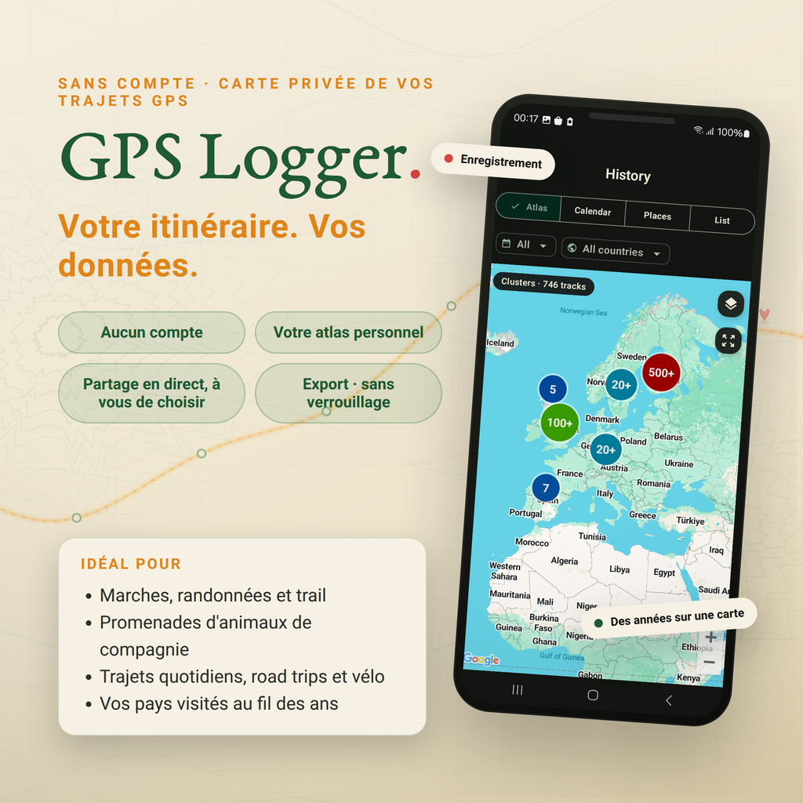
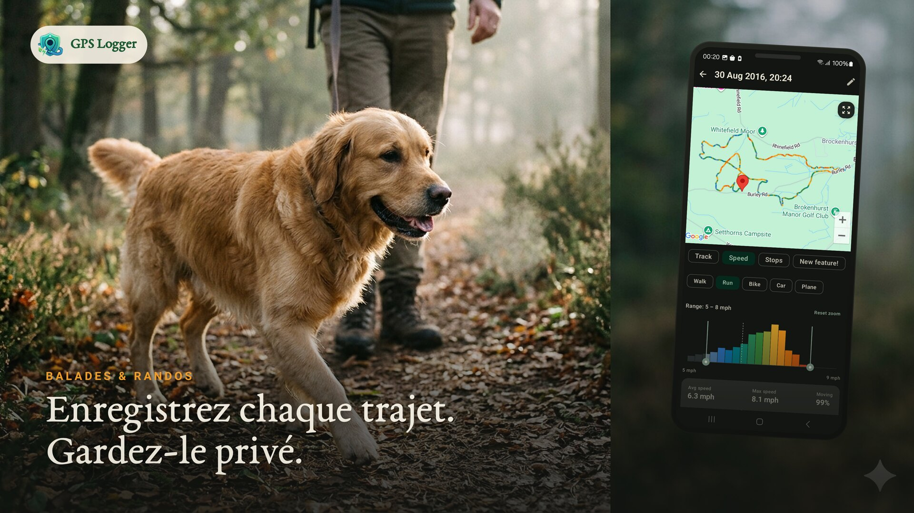
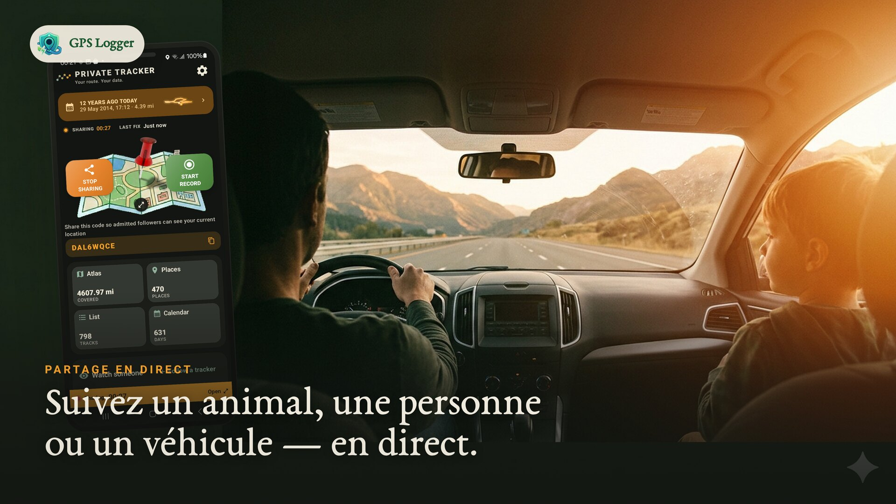
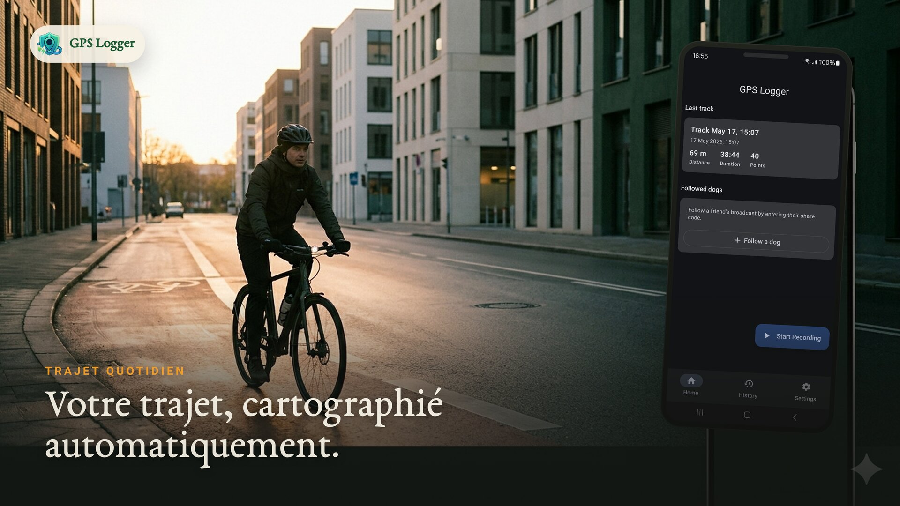
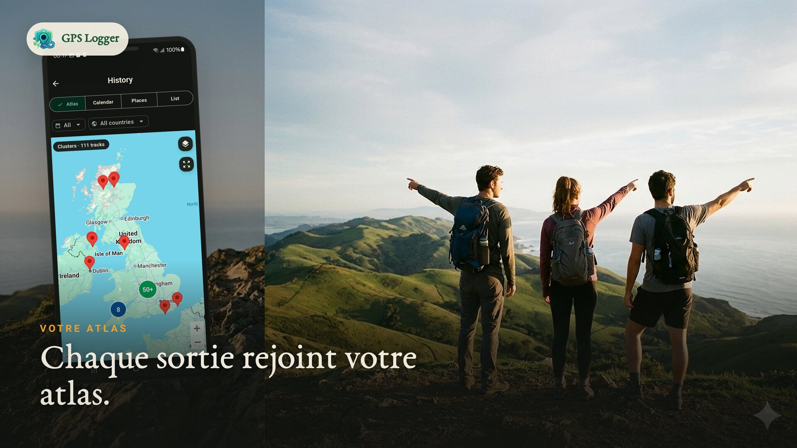
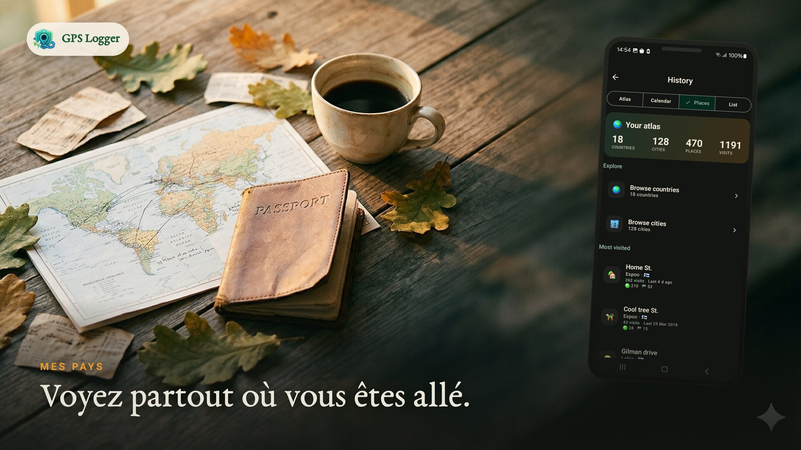
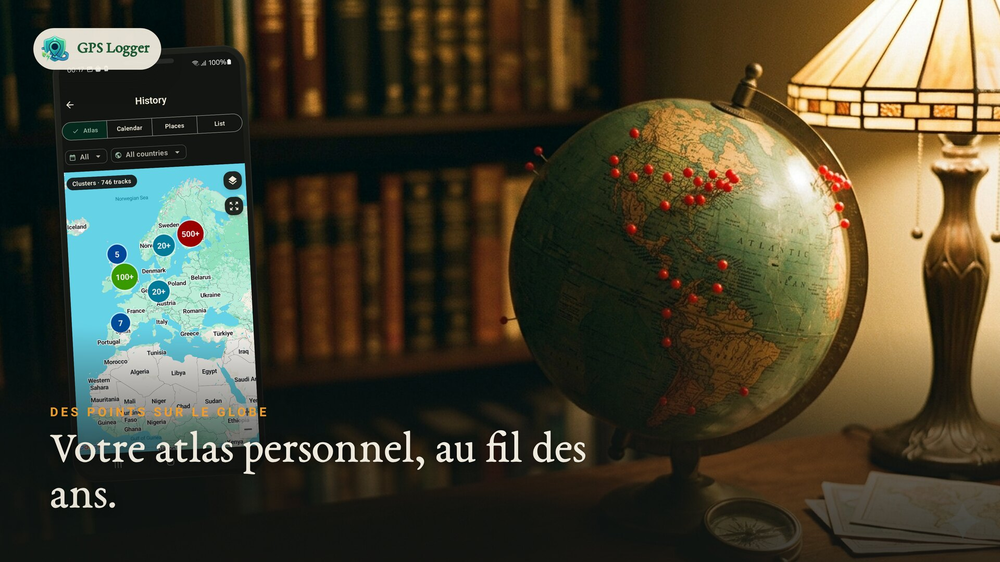
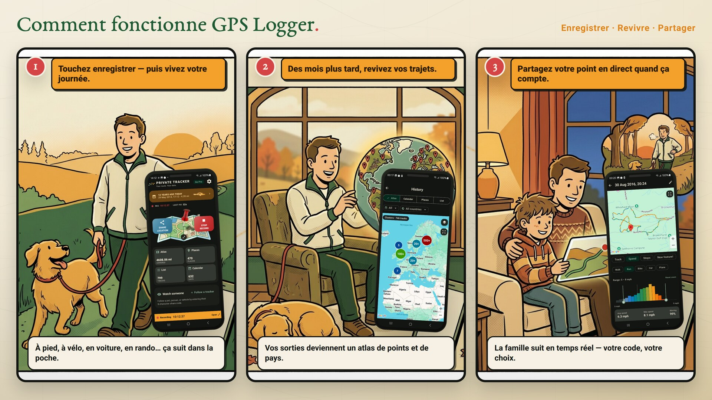

Enregistrer écran éteint
Lancez un enregistrement visible, verrouillez le téléphone et gardez une trace propre de vos marches, randonnées, sorties, trajets et voyages.
GPS Logger privé · Enregistreur GPX
Enregistrez marches, randonnées, sorties à vélo et trajets écran éteint. Gardez un historique privé sur votre téléphone, exportez GPX/KML quand vous en avez besoin et partagez votre position en direct uniquement quand vous le souhaitez.

Touchez enregistrer avant une marche, randonnée, sortie, course, route ou visite de terrain.
Parcourez vos traces enregistrées en carte, calendrier, atlas des lieux et vue par pays.
GPX et KML par trace, plus une sauvegarde ZIP de tout l'historique. Toujours portable.
Le partage en direct optionnel relaie votre position actuelle, pas un historique de parcours cloud.
Pourquoi utiliser GPS Logger
Utilisez GPS Logger quand Google Timeline ne suffit plus, quand une autre app enferme le GPX, ou quand vous avez besoin d'enregistrer écran éteint une randonnée, un trajet, un road trip ou une visite de terrain sans créer de profil fitness social.






Pourquoi l'installer
Lancez un enregistrement visible, verrouillez le téléphone et gardez une trace propre de vos marches, randonnées, sorties, trajets et voyages.
Transformez vos traces en atlas personnel : carte, jours suivis, lieux récurrents, pays et statistiques.
Importez d'anciens fichiers GPX, exportez GPX/KML quand nécessaire et conservez une sauvegarde ZIP hors de l'app.
Envoyez un code réinitialisable quand quelqu'un doit suivre votre position. À l'arrêt, la session en direct est supprimée.
Utilisez les journaux de parcours pour road trips, visites de terrain, contrôles cartographiques, notes outdoor ou souvenirs.
Les fichiers ouverts et le stockage local gardent votre historique utile même si vous changez d'outil plus tard.
Voyez-le en mouvement

Comment ça marche

Cliquez une fois et c'est parti. Le suivi se fait dans votre poche.
Des mois plus tard, parcourez une carte à vie, vos lieux et vos pays.
Envoyez votre position avec un code réinitialisable et une limite d'abonnés.
Fonctionnalités
Lancez un enregistrement pour toute marche, randonnée, trajet, course ou voyage. Le suivi continue en arrière-plan et sauvegarde votre parcours à l'arrêt.
Une carte à vie de partout où vous êtes allé, un calendrier des jours suivis, les lieux où vous revenez et des statistiques complètes par parcours.
Partagez votre position actuelle avec un code réinitialisable et une limite d'abonnés que vous fixez (1–20). Seule votre position actuelle est stockée.
Exportez des parcours individuels en GPX ou KML, ou sauvegardez tout votre historique dans un ZIP GPX. Formats ouverts, vos données, n'importe quand.
Le suivi adaptatif réduit la fréquence GPS quand vous êtes immobile. Une notification s'affiche pendant l'enregistrement, avec démarrage auto optionnel.
Pas de compte pour enregistrer. Les parcours vivent sur votre téléphone, le partage est optionnel, et vous pouvez tout supprimer quand vous le souhaitez.
Captures d'écran


Guides de suivi GPS
Tutoriel
Enregistrement étape par étape, suivi en arrière-plan, export GPX et sauvegarde complète.
Écran éteint
Localisation en arrière-plan, notification visible, batterie et attentes réalistes.
Confidentialité
Ce qui reste sur votre téléphone, quand les données sont envoyées et comment garder une carte privée.
Historique
Une archive de parcours que vous lancez, arrêtez, exportez et gardez sur votre téléphone.
Partage en direct
Partagez la position actuelle temporairement sans transformer chaque déplacement en trace cloud.
Altitude
Nettoyez les altitudes bruitées, les pics impossibles et le dénivelé avec des données de terrain.
Comparaison
Choisissez entre un journal de parcours privé, un réseau d'entraînement, ou les deux.
Import & migration
Rassemblez d'anciennes routes depuis des fichiers GPX ou sauvegardes ZIP dans un même atlas.
Flux de travail
Exportez des traces portables pour la cartographie, les SIG, les archives de voyage et l'analyse de parcours.
GPS Logger fonctionne comme service de premier plan pour que l'enregistrement continue écran éteint ou pendant que vous utilisez d'autres apps. L'échantillonnage adaptatif aide à économiser la batterie et le démarrage automatique optionnel peut reprendre une session après redémarrage.
Les parcours restent sur votre téléphone sauf si vous choisissez le partage en direct ou l'export. Le partage en direct ne stocke que votre position actuelle et la supprime à l'arrêt. La carte et les diagnostics utilisent les prestataires décrits dans la politique de confidentialité.
FAQ
Non. L'enregistrement ne commence que lorsque vous le lancez. La seule exception est le démarrage auto optionnel après un redémarrage, que vous activez vous-même.
Sur votre appareil. Rien n'est téléchargé sauf si vous choisissez de partager votre position ou d'exporter un fichier.
Vous partagez un code réinitialisable et choisissez une limite de suiveurs. Toute personne disposant du code voit uniquement votre position actuelle sur une carte. La position est supprimée à l'arrêt.
Oui. Exportez n'importe quel parcours en GPX ou KML, ou sauvegardez tout votre historique dans un ZIP GPX. Pas de verrouillage.
Oui. Installez l'app et enregistrez d'abord de vrais parcours. Si vous avez ensuite besoin de plus de capacité, l'app explique les options disponibles au bon moment.
Oui. Vous pouvez importer des fichiers GPX sélectionnés, y compris des sauvegardes ZIP. L'app affiche les limites actuelles avant de commencer.
Oui. Un service de premier plan permet l'enregistrement en arrière-plan. Suivez les conseils sur la batterie dans l'application pour éviter les interruptions par Android.